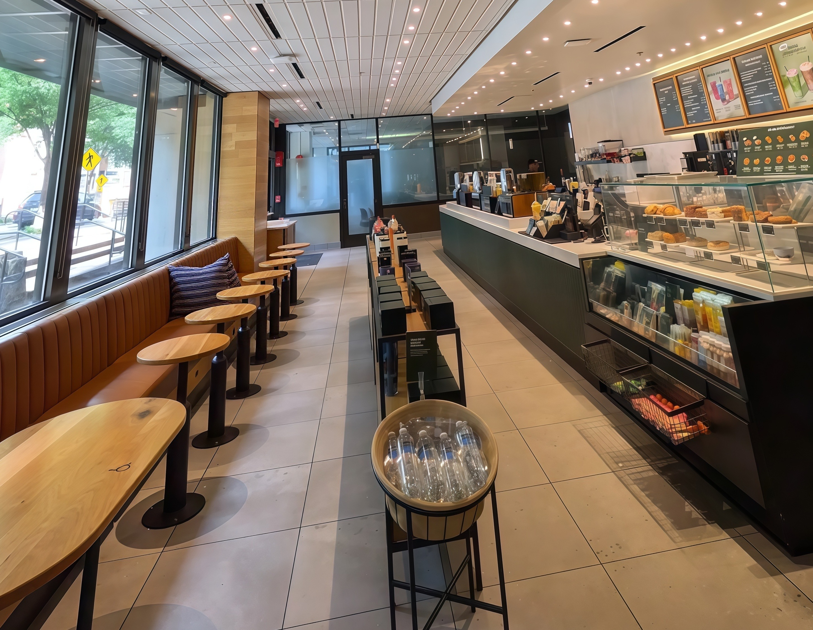
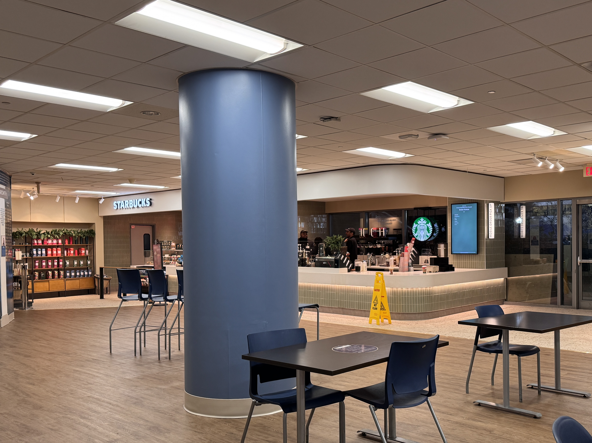

Two on-campus Starbucks locations with different atmospheres for studying, short breaks, and coffee runs.

Located on or near the lower level of Gelman Library, this Starbucks sits right in the middle of campus. Most of the crowd here is made up of students moving between classes or study sessions upstairs, so the atmosphere leans more academic than touristy. While there is still the usual café background noise, it tends to stay relatively steady and predictable, which can work well as a backdrop for light studying or laptop work.
Seating is designed with students in mind, with tables that can fit a laptop and notes, and it is easy to grab a drink and then head directly into Gelman’s study floors. It is a convenient option when you want to stay in a study mindset but change the immediate environment from a quiet floor to a more casual space.

This Starbucks is located inside or next to GW Hospital and serves a wider mix of people, including hospital staff, visitors, and students coming from nearby health sciences buildings. The environment tends to be more active, with more foot traffic, conversations, and movement related to hospital schedules and patient visiting hours.
Because of the busier flow and more frequent interruptions, this location works better as a quick stop than as a long-term study spot. It can still be a useful place to pause between clinical activities, labs, or commutes, especially if you need a short reset rather than a full study block.
Near main campus, mostly students, good for light study & transitions into library floors.
High foot traffic, quick-stop location, better for short reset than extended study.